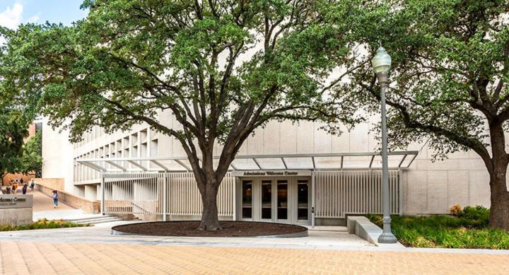
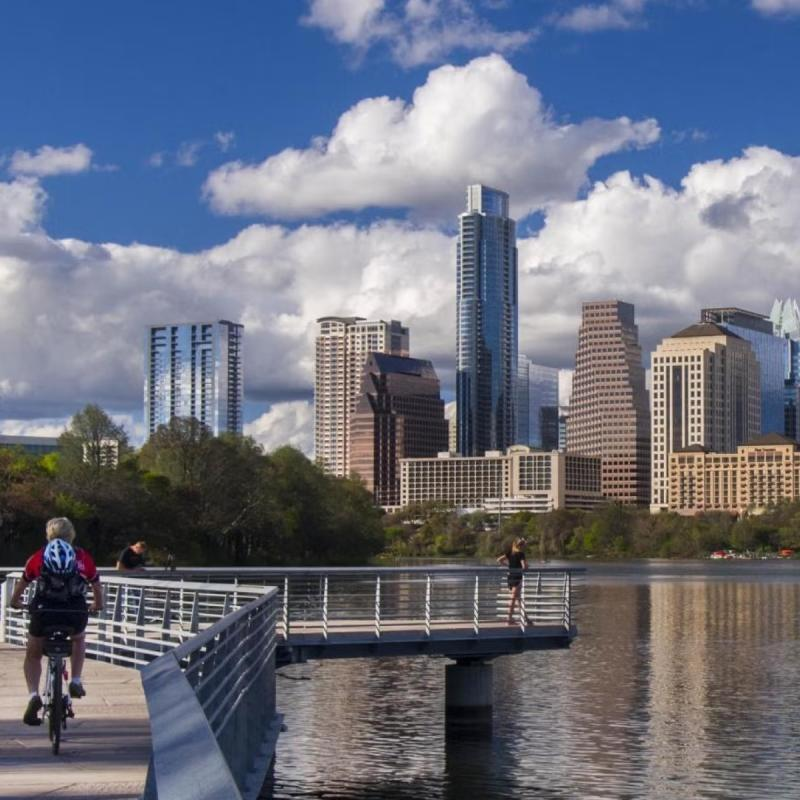
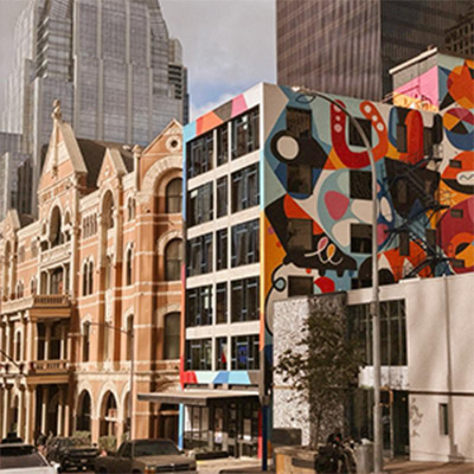
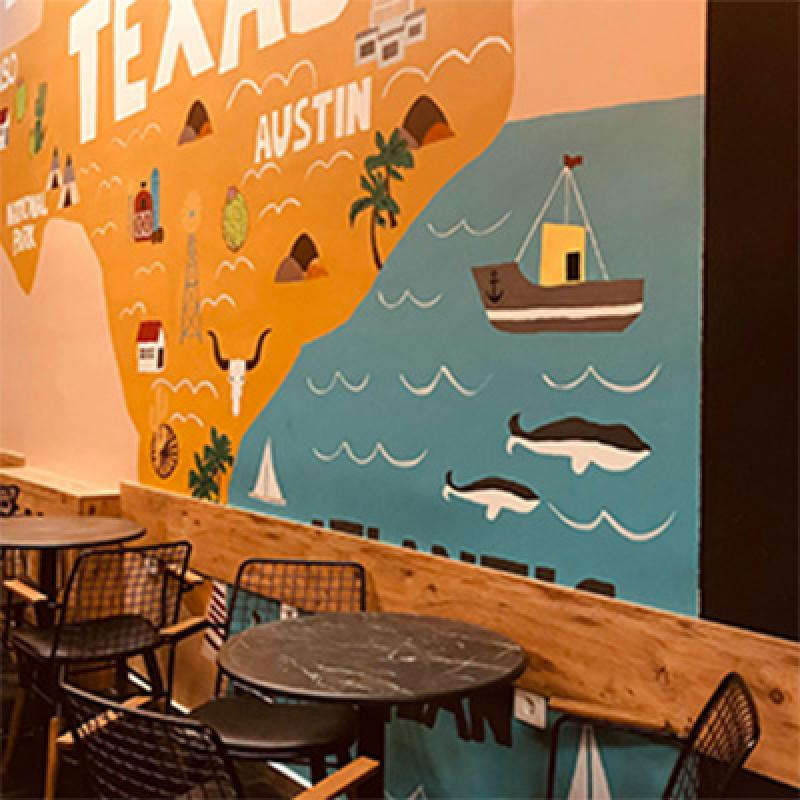

Campus Visits
Virtual Tours
Visitor Parking
University Map
Parent & Family Resources
Austin-Bergstrom International Airport
UT Shuttle Bus
UT Parking and Transportation
Look Around Virtual Tour
Campus Visits and Tours
University Unions 360° Virtual Tours
Resources for Parents and Families
Safety Information for Families
Family Orientation
Texas Parents Association
Family Weekend

Life in Austin

Places to Stay

Places to Dine
Things to Do